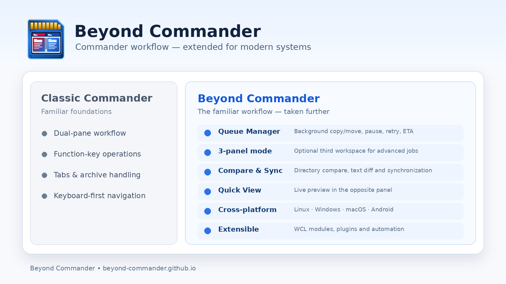

Plugins
Compatibility refers to the plugin binary/API itself, not to whether a Beyond Commander build for that platform has already been released.

| Plugin family | Purpose | Windows | macOS | Android | Linux | Catalogue / source |
|---|---|---|---|---|---|---|
| WCX | Packer / archive plugins | ✓ Native ABI | △ Port/build dependent | △ Port/build dependent | △ PE/Wine bridge needed | Official catalogue ↗ |
| WFX | File-system plugins | ✓ Native ABI | △ Port/build dependent | △ Port/build dependent | △ PE/Wine bridge needed | Official catalogue ↗ |
| WLX | Lister / viewer plugins | ✓ Native ABI | △ Port/build dependent | △ Port/build dependent | △ PE/Wine bridge needed | Official catalogue ↗ |
| WDX | Content / metadata plugins | ✓ Native ABI | △ Port/build dependent | △ Port/build dependent | △ PE/Wine bridge needed | Official catalogue ↗ |
Native plugins compiled for the host platform can be loaded directly. Windows PE Total Commander plugins on Linux require the PE/Wine bridge and must not be presented as native Linux plugins.
WCL modules
This block is ready for direct links to Beyond Commander/community WCL modules as they are published.
Linux packages
AppImage, DEB, RPM and Flatpak packages are available for Beyond Commander on Linux.